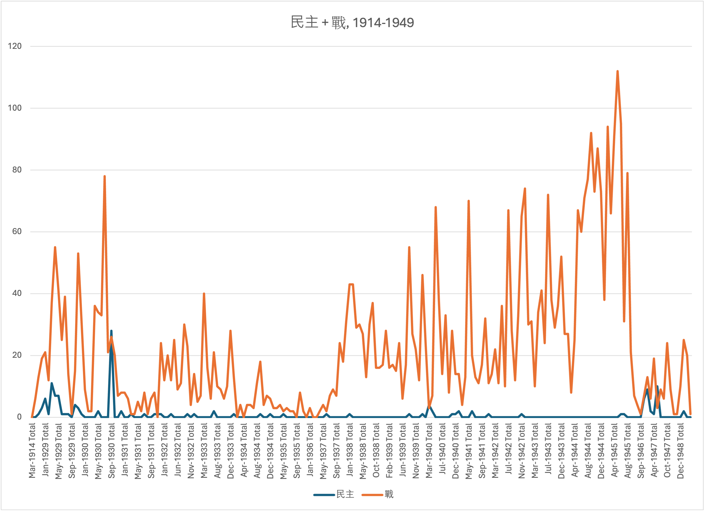

Wolfgang Schwalenberg
Aspiring Historian
About
Wolfgang Schwalenberg is a graduate student in the Department of History department at Binghamton University where he is pursuing a PhD.
His research interests focus on the complex intricacies of modern Chinese and European (particularly German) history, the history of science and technology, and imperialism.
Main adviser: Dr. Fa-ti Fan
Research Interests
- Modern China
- Modern Europe
- History of Science & Technology
- Imperialism
Education
BA Chinese Language & Literature, CUNY Hunter College, May 2022
MA History, SUNY Binghamton, expected May 2024
Languages
German
English
Chinese
Research
In addition to the conventional methods of historical science, I also employ the possibilities of digital history methods to gain insights that would hardly be achievable with analog methods. My project "War on Their Minds" uses various computational methods to examine a database in which Chinese newspapers are stored. The aim of this study is to understand to what extent concepts related to democracy in Republic-era China were discussed in newspapers or whether other topics, such as war, predominated.
For this purpose, I examined 2,187 front pages of various Chinese newspapers from the period 1914 to 1949 using various methods such as web scraping and Python codes programmed for this purpose for certain keywords that are related to both "democracy" and "war."
The results of this project and its documentation can be viewed here:
Link to projectContact
Binghamton University, Department of History, 4400 Vestal Pkwy E, Binghamton, NY 13902, USA
wschwal1@binghamton.edu